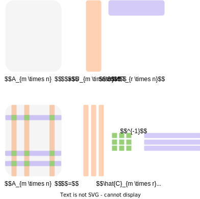
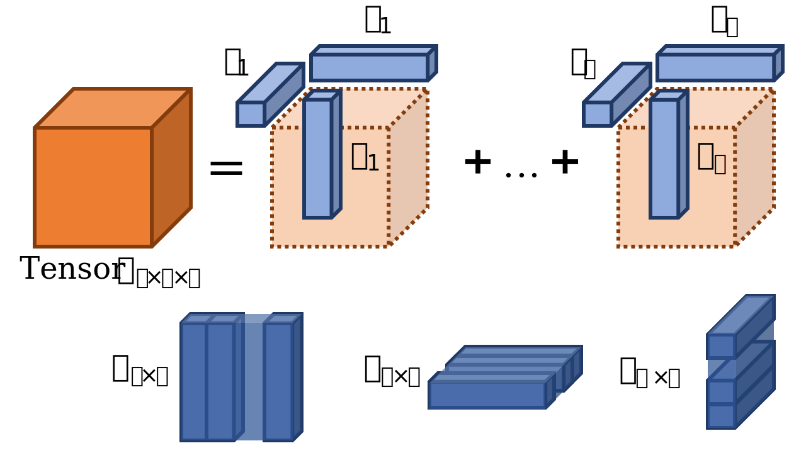
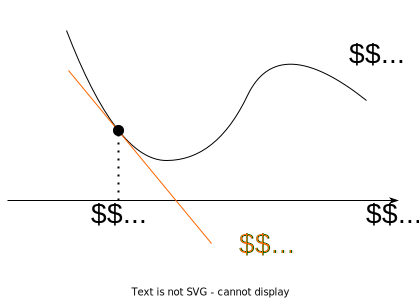
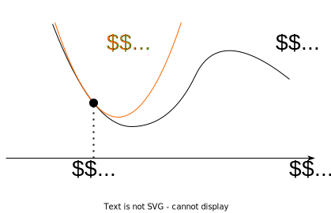

1 Basic linear algebra background
1.1 Vectors and matrices
We will treat all vectors as column vectors by default. The space of real vectors of length n is denoted by \mathbb{R}^n, while the space of real-valued m \times n matrices is denoted by \mathbb{R}^{m \times n}. That’s it: 1
x = \begin{bmatrix} x_1 \\ x_2 \\ \vdots \\ x_n \end{bmatrix} \quad x^T = \begin{bmatrix} x_1 & x_2 & \dots & x_n \end{bmatrix} \quad x \in \mathbb{R}^n, x_i \in \mathbb{R} \tag{1} Similarly, if A \in \mathbb{R}^{m \times n} we denote transposition as A^T \in \mathbb{R}^{n \times m}: A = \begin{bmatrix} a_{11} & a_{12} & \dots & a_{1n} \\ a_{21} & a_{22} & \dots & a_{2n} \\ \vdots & \vdots & \ddots & \vdots \\ a_{m1} & a_{m2} & \dots & a_{mn} \end{bmatrix} \quad A^T = \begin{bmatrix} a_{11} & a_{21} & \dots & a_{m1} \\ a_{12} & a_{22} & \dots & a_{m2} \\ \vdots & \vdots & \ddots & \vdots \\ a_{1n} & a_{2n} & \dots & a_{mn} \end{bmatrix} \quad A \in \mathbb{R}^{m \times n}, a_{ij} \in \mathbb{R} We will write x \geq 0 and x \neq 0 to indicate componentwise relationships

A matrix is symmetric if A = A^T. It is denoted as A \in \mathbb{S}^n (set of square symmetric matrices of dimension n). Note, that only a square matrix could be symmetric by definition.
A matrix A \in \mathbb{S}^n is called positive (negative) definite if for all x \neq 0 : x^T Ax > (<) 0. We denote this as A \succ (\prec) 0. The set of such matrices is denoted as \mathbb{S}^n_{++} (\mathbb{S}^n_{- -})
A matrix A \in \mathbb{S}^n is called positive (negative) semidefinite if for all x : x^T Ax \geq (\leq) 0. We denote this as A \succeq (\preceq) 0. The set of such matrices is denoted as \mathbb{S}^n_{+} (\mathbb{S}^n_{-})
1.2 Matrix and vector product
Let A be a matrix of size m \times n, and B be a matrix of size n \times p, and let the product AB be: C = AB then C is a m \times p matrix, with element (i, j) given by: c_{ij} = \sum_{k=1}^n a_{ik}b_{kj}.
This operation in a naive form requires \mathcal{O}(n^3) arithmetical operations, where n is usually assumed as the largest dimension of matrices.
Let A be a matrix of shape m \times n, and x be n \times 1 vector, then the i-th component of the product: z = Ax is given by: z_i = \sum_{k=1}^n a_{ik}x_k
Remember, that:
- C = AB \quad C^T = B^T A^T
- AB \neq BA
- e^{A} =\sum\limits_{k=0}^{\infty }{1 \over k!}A^{k}
- e^{A+B} \neq e^{A} e^{B} (but if A and B are commuting matrices, which means that AB = BA, e^{A+B} = e^{A} e^{B})
- \langle x, Ay\rangle = \langle A^T x, y\rangle
1.3 Norms and scalar products
Norm is a qualitative measure of the smallness of a vector and is typically denoted as \Vert x \Vert.
The norm should satisfy certain properties:
- \Vert \alpha x \Vert = \vert \alpha\vert \Vert x \Vert, \alpha \in \mathbb{R}
- \Vert x + y \Vert \leq \Vert x \Vert + \Vert y \Vert (triangle inequality)
- If \Vert x \Vert = 0 then x = 0
The distance between two vectors is then defined as d(x, y) = \Vert x - y \Vert. The most well-known and widely used norm is Euclidean norm: \Vert x \Vert_2 = \sqrt{\sum_{i=1}^n |x_i|^2}, which corresponds to the distance in our real life. If the vectors have complex elements, we use their modulus.
Euclidean norm, or 2-norm, is a subclass of an important class of p-norms:
\Vert x \Vert_p = \Big(\sum_{i=1}^n |x_i|^p\Big)^{1/p}. There are two very important special cases. The infinity norm, or Chebyshev norm is defined as the element of the maximal absolute value: \Vert x \Vert_{\infty} = \max_i | x_i| L_1 norm (or Manhattan distance) which is defined as the sum of modules of the elements of x:
\Vert x \Vert_1 = \sum_i |x_i|
L_1 norm plays a very important role: it all relates to the compressed sensing methods that emerged in the mid-00s as one of the most popular research topics. The code for the picture below is available here: 👨💻

In some sense there is no big difference between matrices and vectors (you can vectorize the matrix), and here comes the simplest matrix norm Frobenius norm: \Vert A \Vert_F = \left(\sum_{i=1}^m \sum_{j=1}^n |a_{ij}|^2\right)^{1/2} Spectral norm, \Vert A \Vert_2 is one of the most used matrix norms (along with the Frobenius norm).
\Vert A \Vert_2 = \sup_{x \ne 0} \frac{\Vert A x \Vert_2}{\Vert x \Vert_{2}}, It can not be computed directly from the entries using a simple formula, like the Frobenius norm, however, there are efficient algorithms to compute it. It is directly related to the singular value decomposition (SVD) of the matrix. It holds
\Vert A \Vert_2 = \sigma_1(A) = \sqrt{\lambda_{\max}(A^TA)}
where \sigma_1(A) is the largest singular value of the matrix A.
The standard scalar (inner) product between vectors x and y from \mathbb{R}^n is given by \langle x, y \rangle = x^T y = \sum\limits_{i=1}^n x_i y_i = y^T x = \langle y, x \rangle
Here x_i and y_i are the scalar i-th components of corresponding vectors.
The standard scalar (inner) product between matrices X and Y from \mathbb{R}^{m \times n} is given by
\langle X, Y \rangle = \text{tr}(X^T Y) = \sum\limits_{i=1}^m\sum\limits_{j=1}^n X_{ij} Y_{ij} = \text{tr}(Y^T X) = \langle Y, X \rangle
1.4 Eigenvalues, eigenvectors, and the singular-value decomposition
1.4.1 Eigenvalues
A scalar value \lambda is an eigenvalue of the n \times n matrix A if there is a nonzero vector q such that Aq = \lambda q.
The vector q is called an eigenvector of A. The matrix A is nonsingular if none of its eigenvalues are zero. The eigenvalues of symmetric matrices are all real numbers, while nonsymmetric matrices may have imaginary eigenvalues. If the matrix is positive definite as well as symmetric, its eigenvalues are all positive real numbers.
Suppose A \in S_n, i.e., A is a real symmetric n \times n matrix. Then A can be factorized as
A = Q\Lambda Q^T,
where Q \in \mathbb{R}^{n \times n} is orthogonal, i.e., satisfies Q^T Q = I, and \Lambda = \text{diag}(\lambda_1, \ldots , \lambda_n). The (real) numbers \lambda_i are the eigenvalues of A and are the roots of the characteristic polynomial \text{det}(A - \lambda I). The columns of Q form an orthonormal set of eigenvectors of A. The factorization is called the spectral decomposition or (symmetric) eigenvalue decomposition of A. 2
We usually order the eigenvalues as \lambda_1 \geq \lambda_2 \geq \ldots \geq \lambda_n. We use the notation \lambda_i(A) to refer to the i-th largest eigenvalue of A \in S. We usually write the largest or maximum eigenvalue as \lambda_1(A) = \lambda_{\text{max}}(A), and the least or minimum eigenvalue as \lambda_n(A) = \lambda_{\text{min}}(A).
The largest and smallest eigenvalues satisfy
\lambda_{\text{min}} (A) = \inf_{x \neq 0} \dfrac{x^T Ax}{x^T x}, \qquad \lambda_{\text{max}} (A) = \sup_{x \neq 0} \dfrac{x^T Ax}{x^T x}
and consequently \forall x \in \mathbb{R}^n (Rayleigh quotient):
\lambda_{\text{min}} (A) x^T x \leq x^T Ax \leq \lambda_{\text{max}} (A) x^T x
The condition number of a nonsingular matrix is defined as
\kappa(A) = \|A\|\|A^{-1}\|
Suppose A \in \mathbb{R}^{m \times n} with rank A = r. Then A can be factored as
A = U \Sigma V^T , \quad (A.12)
where U \in \mathbb{R}^{m \times r} satisfies U^T U = I, V \in \mathbb{R}^{n \times r} satisfies V^T V = I, and \Sigma is a diagonal matrix with \Sigma = \text{diag}(\sigma_1, ..., \sigma_r), such that
\sigma_1 \geq \sigma_2 \geq \ldots \geq \sigma_r > 0.
1.4.2 Singular value decomposition
This factorization is called the singular value decomposition (SVD) of A. The columns of U are called left singular vectors of A, the columns of V are right singular vectors, and the numbers \sigma_i are the singular values. The singular value decomposition can be written as
A = \sum_{i=1}^{r} \sigma_i u_i v_i^T,
where u_i \in \mathbb{R}^m are the left singular vectors, and v_i \in \mathbb{R}^n are the right singular vectors.
1.4.3 Skeleton decomposition
Simple, yet very interesting decomposition is Skeleton decomposition, which can be written in two forms:
A = U V^T \quad A = \hat{C}\hat{A}^{-1}\hat{R}
The latter expression refers to the fun fact: you can randomly choose r linearly independent columns of a matrix and any r linearly independent rows of a matrix and store only them with the ability to reconstruct the whole matrix exactly.

Use cases for Skeleton decomposition are:
- Model reduction, data compression, and speedup of computations in numerical analysis: given rank-r matrix with r \ll n, m one needs to store \mathcal{O}((n + m)r) \ll nm elements.
- Feature extraction in machine learning, where it is also known as matrix factorization
- All applications where SVD applies, since Skeleton decomposition can be transformed into truncated SVD form.
1.5 Canonical tensor decomposition
One can consider the generalization of Skeleton decomposition to the higher order data structure, like tensors, which implies representing the tensor as a sum of r primitive tensors.

1.6 Determinant and trace
The determinant and trace can be expressed in terms of the eigenvalues
\text{det} A = \prod\limits_{i=1}^n \lambda_i, \qquad \text{tr} A = \sum\limits_{i=1}^n \lambda_i
The determinant has several appealing (and revealing) properties. For instance,
- \text{det} A = 0 if and only if A is singular;
- \text{det} AB = (\text{det} A)(\text{det} B);
- \text{det} A^{-1} = \frac{1}{\text{det} \ A}.
Don’t forget about the cyclic property of a trace for arbitrary matrices A, B, C, D (assuming, that all dimensions are consistent):
\text{tr} (ABCD) = \text{tr} (DABC) = \text{tr} (CDAB) = \text{tr} (BCDA)
2 Optimization bingo
2.1 Gradient
Let f(x):\mathbb{R}^n→\mathbb{R}, then vector, which contains all first-order partial derivatives:
\nabla f(x) = \dfrac{df}{dx} = \begin{pmatrix} \frac{\partial f}{\partial x_1} \\ \frac{\partial f}{\partial x_2} \\ \vdots \\ \frac{\partial f}{\partial x_n} \end{pmatrix}
named gradient of f(x). This vector indicates the direction of the steepest ascent. Thus, vector −\nabla f(x) means the direction of the steepest descent of the function in the point. Moreover, the gradient vector is always orthogonal to the contour line in the point.
2.2 Hessian
Let f(x):\mathbb{R}^n→\mathbb{R}, then matrix, containing all the second order partial derivatives:
f''(x) = \dfrac{\partial^2 f}{\partial x_i \partial x_j} = \begin{pmatrix} \frac{\partial^2 f}{\partial x_1 \partial x_1} & \frac{\partial^2 f}{\partial x_1 \partial x_2} & \dots & \frac{\partial^2 f}{\partial x_1\partial x_n} \\ \frac{\partial^2 f}{\partial x_2 \partial x_1} & \frac{\partial^2 f}{\partial x_2 \partial x_2} & \dots & \frac{\partial^2 f}{\partial x_2 \partial x_n} \\ \vdots & \vdots & \ddots & \vdots \\ \frac{\partial^2 f}{\partial x_n \partial x_1} & \frac{\partial^2 f}{\partial x_n \partial x_2} & \dots & \frac{\partial^2 f}{\partial x_n \partial x_n} \end{pmatrix}
In fact, Hessian could be a tensor in such a way: \left(f(x): \mathbb{R}^n \to \mathbb{R}^m \right) is just 3d tensor, every slice is just hessian of corresponding scalar function \left( H\left(f_1(x)\right), H\left(f_2(x)\right), \ldots, H\left(f_m(x)\right)\right).
This matrix provides information about the curvature of the function in different directions.
2.3 Jacobian
The extension of the gradient of multidimensional f(x):\mathbb{R}^n\to\mathbb{R}^m is the following matrix:
J_f = f'(x) = \dfrac{df}{dx^T} = \begin{pmatrix} \frac{\partial f_1}{\partial x_1} & \frac{\partial f_2}{\partial x_2} & \dots & \frac{\partial f_m}{\partial x_n} \\ \frac{\partial f_1}{\partial x_1} & \frac{\partial f_2}{\partial x_2} & \dots & \frac{\partial f_m}{\partial x_n} \\ \vdots & \vdots & \ddots & \vdots \\ \frac{\partial f_1}{\partial x_1} & \frac{\partial f_2}{\partial x_2} & \dots & \frac{\partial f_m}{\partial x_n} \end{pmatrix}
This matrix provides information about the rate of change of the function with respect to its inputs.
2.4 Summary
f(x) : X \to Y; \qquad \frac{\partial f(x)}{\partial x} \in G
| X | Y | G | Name |
|---|---|---|---|
| \mathbb{R} | \mathbb{R} | \mathbb{R} | f'(x) (derivative) |
| \mathbb{R}^n | \mathbb{R} | \mathbb{R^n} | \dfrac{\partial f}{\partial x_i} (gradient) |
| \mathbb{R}^n | \mathbb{R}^m | \mathbb{R}^{m \times n} | \dfrac{\partial f_i}{\partial x_j} (jacobian) |
| \mathbb{R}^{m \times n} | \mathbb{R} | \mathbb{R}^{n \times m} | \dfrac{\partial f}{\partial x_{ij}} |
2.5 Taylor approximations
Taylor approximations provide a way to approximate functions locally by polynomials. The idea is that for a smooth function, we can approximate it by its tangent (for the first order) or by its parabola (for the second order) at a point.
2.5.1 First-order Taylor approximation
The first-order Taylor approximation, also known as the linear approximation, is centered around some point x_0. If f: \mathbb{R}^n \rightarrow \mathbb{R} is a differentiable function, then its first-order Taylor approximation is given by:
f_{x_0}^I(x) = f(x_0) + \nabla f(x_0)^T (x - x_0)
Where:
- f(x_0) is the value of the function at the point x_0.
- \nabla f(x_0) is the gradient of the function at the point x_0.
It is very usual to replace the f(x) with f_{x_0}^I(x) near the point x_0 for simple analysis of some approaches.

2.5.2 Second-order Taylor approximation
The second-order Taylor approximation, also known as the quadratic approximation, includes the curvature of the function. For a twice-differentiable function f: \mathbb{R}^n \rightarrow \mathbb{R}, its second-order Taylor approximation centered at some point x_0 is:
f_{x_0}^{II}(x) = f(x_0) + \nabla f(x_0)^T (x - x_0) + \frac{1}{2} (x - x_0)^T \nabla^2 f(x_0) (x - x_0)
Where:
- \nabla^2 f(x_0) is the Hessian matrix of f at the point x_0.

When using the linear approximation of the function is not sufficient one can consider replacing the f(x) with f_{x_0}^{II}(x) near the point x_0. In general, Taylor approximations give us a way to locally approximate functions. The first-order approximation is a plane tangent to the function at the point x_0, while the second-order approximation includes the curvature and is represented by a parabola. These approximations are especially useful in optimization and numerical methods because they provide a tractable way to work with complex functions.
Note, that even the second-order approximation could become inaccurate very quickly. The code for the picture below is available here: 👨💻
3 Derivatives
3.1 Naive approach
The basic idea of the naive approach is to reduce matrix/vector derivatives to the well-known scalar derivatives. One of the most important practical tricks here is to separate indices of sum (i) and partial derivatives (k). Ignoring this simple rule tends to produce mistakes.
3.2 Differential approach
The guru approach implies formulating a set of simple rules, which allows you to calculate derivatives just like in a scalar case. It might be convenient to use the differential notation here. 3
3.2.1 Differentials
After obtaining the differential notation of df we can retrieve the gradient using the following formula:
df(x) = \langle \nabla f(x), dx\rangle
Then, if we have a differential of the above form and we need to calculate the second derivative of the matrix/vector function, we treat “old” dx as the constant dx_1, then calculate d(df) = d^2f(x)
d^2f(x) = \langle \nabla^2 f(x) dx_1, dx\rangle = \langle H_f(x) dx_1, dx\rangle
3.2.2 Properties
Let A and B be the constant matrices, while X and Y are the variables (or matrix functions).
- dA = 0
- d(\alpha X) = \alpha (dX)
- d(AXB) = A(dX )B
- d(X+Y) = dX + dY
- d(X^T) = (dX)^T
- d(XY) = (dX)Y + X(dY)
- d\langle X, Y\rangle = \langle dX, Y\rangle+ \langle X, dY\rangle
- d\left( \dfrac{X}{\phi}\right) = \dfrac{\phi dX - (d\phi) X}{\phi^2}
- d\left( \det X \right) = \det X \langle X^{-T}, dX \rangle
- d\left(\text{tr } X \right) = \langle I, dX\rangle
- df(g(x)) = \dfrac{df}{dg} \cdot dg(x)
- H = (J(\nabla f))^T
- d(X^{-1})=-X^{-1}(dX)X^{-1}
4 References
- Convex Optimization book by S. Boyd and L. Vandenberghe - Appendix A. Mathematical background.
- Numerical Optimization by J. Nocedal and S. J. Wright. - Background Material.
- Matrix decompositions Cheat Sheet.
- Good introduction
- The Matrix Cookbook
- MSU seminars (Rus.)
- Online tool for analytic expression of a derivative.
- Determinant derivative
- Introduction to Applied Linear Algebra – Vectors, Matrices, and Least Squares - book by Stephen Boyd & Lieven Vandenberghe.
- Numerical Linear Algebra course at Skoltech
Footnotes
A full introduction to applied linear algebra can be found in Introduction to Applied Linear Algebra – Vectors, Matrices, and Least Squares - book by Stephen Boyd & Lieven Vandenberghe, which is indicated in the source. Also, a useful refresher for linear algebra is in Appendix A of the book Numerical Optimization by Jorge Nocedal Stephen J. Wright.↩︎
A good cheat sheet with matrix decomposition is available at the NLA course website.↩︎
The most comprehensive and intuitive guide about the theory of taking matrix derivatives is presented in these notes by Dmitry Kropotov team.↩︎